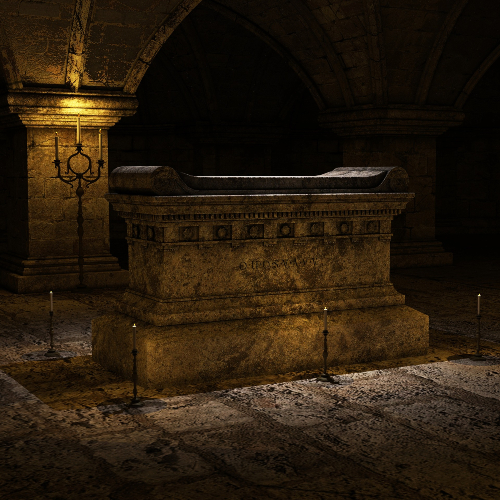
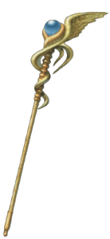

Thankfully nothing trap-related happens, which given your track record for having close scrapes with icky ends via trap-related means, saves you from the off-chance that this trap probably would’ve actually gotten you this time. And hey, one of the doors in here opened, so that’s a plus too, probably. Another day, spiders.
Going through the door, you find yourself in a dark and musty room, and at first glance, it’s surprisingly empty. Upon closer inspection you find that while crossing your eyes, you see that there’s actually a pedestal in the back of the room. You have to tip your non-existent hat to whoever made this arcane-dungeon-crypt-thing in the first place, that was a pretty good room illusion.
Walking up to it still cross-eyed, you notice a slab of ancient script hanging on the wall, which thankfully you don’t have to cross your eyes to read, because this is starting to make your head ache.
"The one who wields this staff and the magical forces within, holds the key to unleashing Armageddon."
Huh, that’s kind of a blunt way of putting it, though you wonder what it means by Chicken Armageddon. Glancing over the text and some thinking, you decide it’s either a typo or misread on your part. It happens. Shrugging your shoulders you remove the staff from its case and decide to leave the dungeon the way you came.
Magic Staff Obtained!
It doesn't look veryimtimidating...
I wonder what it does...